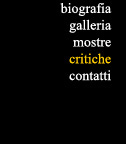
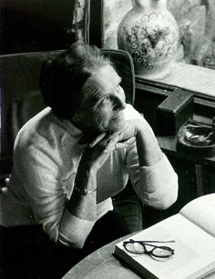

Antologia critica
Video Mostra Imperia
Un disegno rigoroso, a compiture e brividii di verde e argento su una pedana di colore bruciato; si delineano architettura e "biografia" sofferta di alberi, con un accento di umanizzato e gnomico; e questo, insieme alla virtù d'una gentile schiettezza, è un presagio del nuovo romanticismo, il quale forse salverà la pittura moderna...
Ernesto Caballo (1956)
Accenti come di fiaba caratterizzano le preziose, ma mai sofisticate inquadrature di un mondo, ove la suggestività della scena assume il valore di incantata raffigurazione. 
Dinanzi ad alcuni quadri viene di pensare ad una specie di fraseggio musicale che si snoda, attraverso una singolare vena melodica, tra ritmi a volte sinuosi a volte taglienti. Non a caso la natura, nelle molteplici variazioni dalle strutture delle rocce ai motivi dei boschi, è colta in un'atmosfera quasi sospesa, e che pur racchiude una vibrazione interiore. Le tonalità, infine, dal giallo-ocra al viola-bleu al verde rosato, in larghe e tenui stesure concorrono a sottolineare il deside
Franco Miele (1958)
Vi è stata una poesia ligure. E c'è anche una pittura ligure. Che sorge, cioè, dalle suggestioni d'una particolare natura, da un particolare stato d'animo di fronte a quella natura. E' il caso di Silvia Maggioni. In particolare, ci interessa per il suo narrare cantato a mezzi toni, in cui la luce e colori si compenetrano in un alito d'atmosfera. (Quella luce, quei colori: di Liguria, della Riviera). Un alito; ch'è poi senso dell'unità dell'immagine, non improvvisazione impressionistica. Poiché, a guardar bene, l'immagine è strutturata con rigore, depurata dai grumi fisicistici e rimediata poeticamente.
Carlo Munari (1961)
Nelle sue opere, questa pittrice non lascia incontrollata alcuna zona: l'intero spazio è palpitante. Dispone a strati i colori puri con effetto sottilissimo paragonabile a quello offerto dal mondo della natura: il fogliame autunnale, la madreperla, il fuoco che si spegne, le sinuosità dei rettili, le ali della falena ricavandone un effetto inesprimibilmente delicato e vitale. mai compiaciuto o virtuosistico. Come negli antichi maestri e come in Paul Klee, i colori si depongono nell'opera come per un alito, si sovrappongono in una trasparenza che conta però anche venti o trenta strati. Il fondo è sovente. appena tonale nella sua consistenza granulosa, e variegato da zone preziose per la loro interna carica luministica e per la scansione ritmica che producono.
H. Hofer (1963)
Ciò che appare più suo è forse lo spirito di un colore capace di spostarsi nella sua sottile sensibilità con le cristalline ed essenziali strutturazioni poesistiche, rivissute sempre nell'intelletto dell'autrice, al di là d'ogni sua emotiva ispirazione. Il colore che talvolta tinge appena la granulosa consistenza dei fondi non manca mai di farsi interprete delle interiori vibrazioni di questa pittrice che nella apparente semplicità delle sue immagini, traverso questi suoi paesaggi incantati cerca forse, soprattutto, la possibilità di un colloquio.
Angelo Dragone (1967)
Dipinga alberi o boschi, o tremuli filari di pioppi, o cime dolomitiche quasi sognate in un moderno Walhalla, o case sulle rocce od autunnali faggeti, o scheletri d'annosi contorti ulivi, un sentimento amoroso per gli aspetti del mondo, ma quasi pudicamente trattenuto dal timore d'abbandonarsi, anima sempre e riscalda la sua aristocratica pittura.
Marziano Bernardi (1967)
I suoi dipinti, rivelano di possedere uno straordinario rigore intellettuale e al tempo stesso un alto slancio emotivo; una straordinaria limpidezza e fermezza di struttura e al tempo stesso un consenso, un abbandono senza reticenze alla fluente vitalità dei sentimenti. Sembrano, a prima vista, dominati dalle necessità di una riduzione formale e quindi obbedire ai suggerimenti di una cultura, che prende coscienza del mondo attraverso le sue forme semplici e le cui ascendenze possono risalire lontano nel tempo, sino a riconoscersi nella sfaccettatura cristallina dello spazio di Cézanne, sino a risalire cioè alle origini stesse della visione moderna. Ma anche questo amore tutto rivelato per la forma delle cose sta nell'opera di Silvia Maggioni come un calcolo realizzato dal vivo...
Luigi. Carluccio (1967)
Silvia Maggioni riesce a farci sentire, attraverso la sua sensibilità, la musica interna delle cose e per questo l'immagine esterna dei suoi quadri ci fa vivere l'evento riposante, oggi così raro, della profonda pace contemplativa... I singoli componenti della pittura: forma, linea, colore, luce e spazio sono meravigliosamente equilibrati fra di loro e integrati in un'armonia perfetta. La viva vibrazione interna risulta soprattutto dalla cura del dettaglio. dalla animazione del piano pittorico che si fonde con cromatismi, sfumature e passaggi sottilissimi senza sminuire tuttavia l'effetto dell'impressione totale della pace contemplativa.
Herta Sponder (1967)
Questo bisogno di condensare le immagini, di farle vivere nelle umane e parrebbe dantesche forme contorte di tronchi d'ulivi. oltre allo scandire d'una metrica modulata attraversante in foggia di ramo la diagonale del dipinto, oltre l'aprirsi di un'ala triangolare nel composto di un'altra di quelle reti immense, oltre l'apparire di un volto tutta spiritualità e così via, direi che è bisogno d'ascoltare nel vedere il crepitio della sagoma che si riduce all'essenza, al puro consistere, al ciuffo, ai bioccoli della luce che impreziosisce la materia mai bruta nei dipinti di questa soave sintetista delle cose animanti il paesaggio naturale. E l'ispirazione di lei quella forza arcana che conduce il suo pennello agli attimi lirici, al godimento del concertato generale del dipinto in buona pittura, a cui l'astante non può non subito partecipare.
Mario Portalupi (1968)
I suoi dipinti sono in gran parte un inno alla natura, una ricerca di preziose sensazioni che palpitano in lei di fronte al paesaggio che l'artista riesce a penetrare fino a umanizzarlo. Osserviamo i suoi ulivi: luminosi, argentei, contorti, oppressi da vicende vegetali di anni, sembrano svelare il mistero di vite a noi completamente sconosciute e che la Maggioni riesce a raccontarci con pennellate morbide ed eloquenti. Non più alberi ma quasi esseri viventi levigati di una gamma coloristica pastosa, modulata, approfonditi da uno studio severo, intenso, sofferto.
Elio Balestreri (1969)
La critica, che non da oggi ha riconosciuto a Silvia Maggioni le doti di un'autentica artista, potrà anche ora tentare di fissare i termini di una così musicale personalità nei limiti obbligati di una classificazione accademica, di una precisazione di stile, di temperamento, di scuola: e si parlerà di pittura e architettura spaziale, di abbandoni paesistici, di espressionismo naturale, di suggestioni parafuturistiche o neofuturistiche e perfino di riminiscenze di cubismo storico; e si citerà Cézanne come maestro ideale o lontano ispiratore di lei e si ricorderà i suoi ulivi intricati e contorti, la geometrica eleganza dei suoi boschi, il dondolio delle nasse nei dorati anfratti delle scogliere, l'incantesimo delle sue reti, delle brillanti o quasi fosforescenti trasparenze marine...
Giuseppe Serra (1969)
Ormai da parecchi anni questa pittrice porta avanti un suo personale discorso pittorico-fantastico, che se pur lascia intravvedere termini estetici e di diversa ascendenza: cubismo, impressionismo, con incroci sensibili con la luminosità dei Naif e il dinamismo dei futuristi, si evidenzia per una non segreta volontà di puntare tutto sulla reattività dell'emozione. La Maggioni vuole infatti fermare sulla tela l'eterna novità delle forme della natura, quelle di cui coglie i tratti fuggevoli insieme con i lievi suoni di un'armonia di linee, e di segni e di colori che sorge ogni volta che i suoi occhi si fermano a contemplare il farsi della realtà. Questo è indubbiamente un naturalismo lievemente crepuscolare che punta decisamente il dito su dense superfici tagliate e scalate nello spazio in ritmi e costruzioni elaborate musicalmente. I rapporti dei toni cromatici in parallelo con la struttura dei piani, che tradiscono insieme ad insistenze figurative lombarde una completa adesione ad una vibrazione intensa di luce abbagliante tipica della terra e della marina ligure, coinvolgono le forme rotte e accidentate come rocce, di segni scattanti e accensioni che consumano il colore mentre liberano una materia che sembra abbrividire alla brezza che viene dal mare.
Marisa. Vescovo (1972)
La scomposizione dei piani e dei volumi essenziali della visione naturale, in cui era più evidente la scrittura cézanniana con i suoi ritmi spaziali e i suoi timbri cromatici, è andata attenuandosi. con l'abbandono dei moduli schematici entro cui l'immagine del vero appariva ancora un poco ferma e irrigidita ed ora il disegno si è mosso su una linea continua e scorrevole mentre il colore si è sciolto in una luce tenera e morbida, con un contrappunto finissimo di forme e di toni, di pieni e di vuoti, di chiari e di scuri. Da questa aperta sintesi strumentale ed espressiva, dove i mezzi operativi e la strutturazione della materia sono stati portati ad una loro precisa funzionalità, la visione della realtà della vita e della natura attraverso distesi paesaggi, fitti boschi, ulivi contorti, dolci colline, intrichi di reti al sole, fresche composizioni di fiori, ritratti scavati all'interno emerge con serena e luminosa chiarezza come venisse direttamente dall' anima, dentro cui le emozioni e i sentimenti dell'artista l'hanno filtrata, prima di tradurla in immagini di colore scandite sui celesti marini, sui verdi teneri, sulle ocre antiche, sui bruni crepuscolari che, con equilibrate modulazioni di segni e di gamme, si accordano intimamente, in una suggestiva e profonda armonia universale, con i più segreti affiati spirituali.
Enotrio Mastrolonardo (1973)
Spiritualità ed emozione sono i vocaboli-chiave per capire la produzione della Maggioni. Anche nei ritratti cerca di captare la complessità dell ' animo umano accomunando così, nell'esecuzione stilistica e nei comuni fini, persone e paesaggi. Ritorno per un momento ancora sul discorso che avevo accennato di sfuggita: la produzione degli anni '60 e il lavoro a spatola. Il colloquio di fa allora reticente, non sa trovare una risposta completa alle mie domande che incalzano. Ammirando questi quadri, dove l'astrattismo non opprime e non deforma la realtà (sintomatico è il bellissimo e premiato Autunno a Zurigo), lei parla solo di consistenza delle forme e di colori che andavano sovrapposti senza però annullarsi a vicenda. Appassionata di musica classica e con una spiccata predilezione per il pianoforte ha dipinto quadri sotto l'influsso dei grandi musicisti: l'effetto è inusitato e originalissimo.
Giorgio Bregolin (1982)